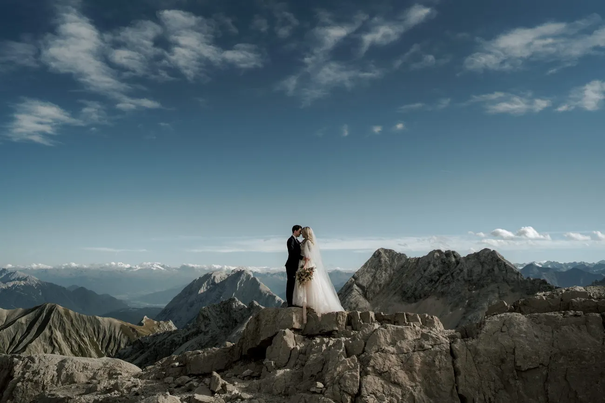
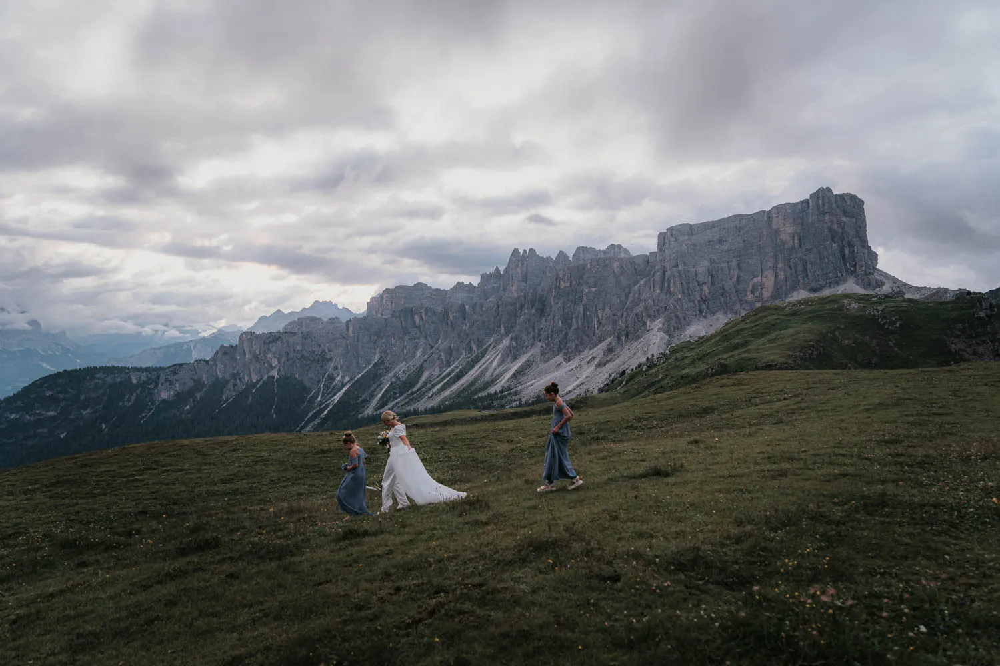
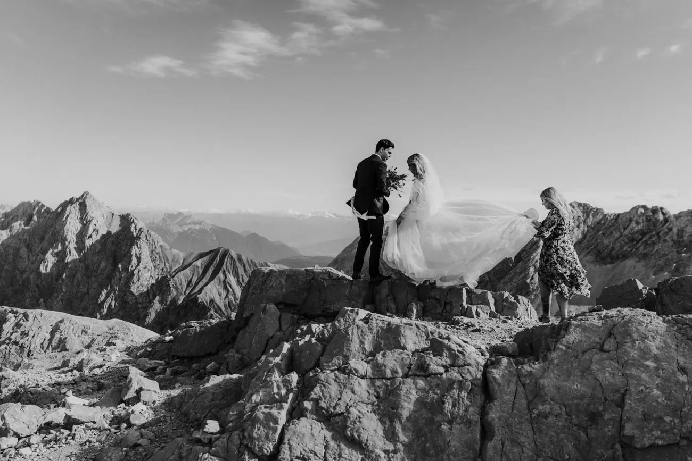
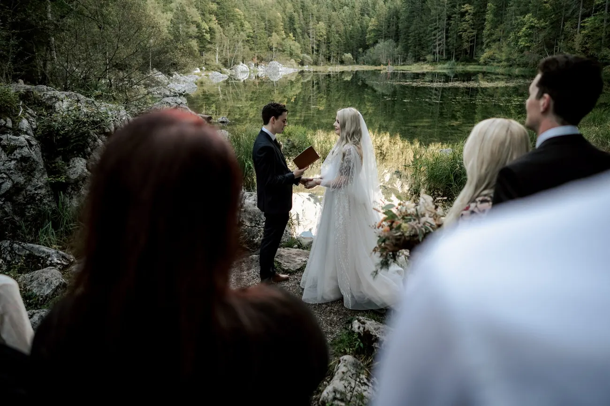
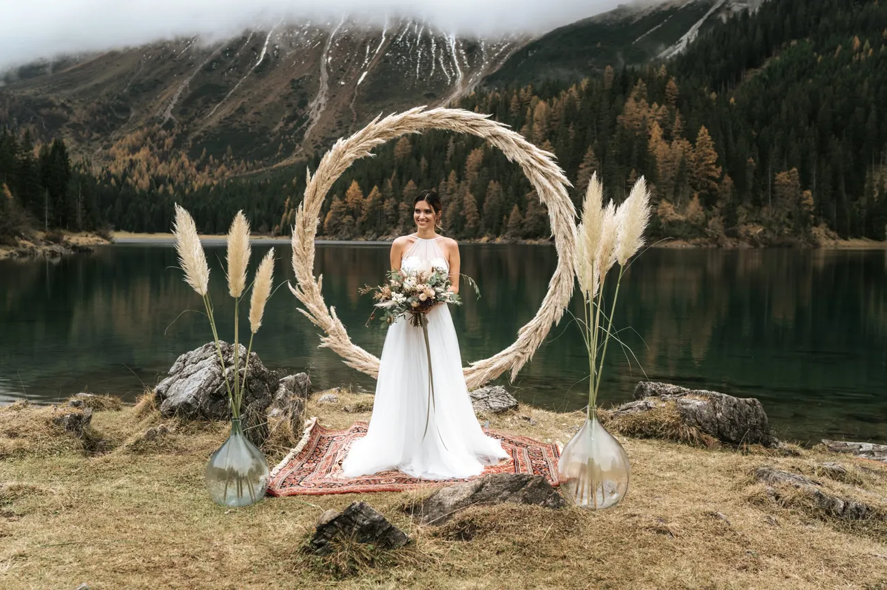
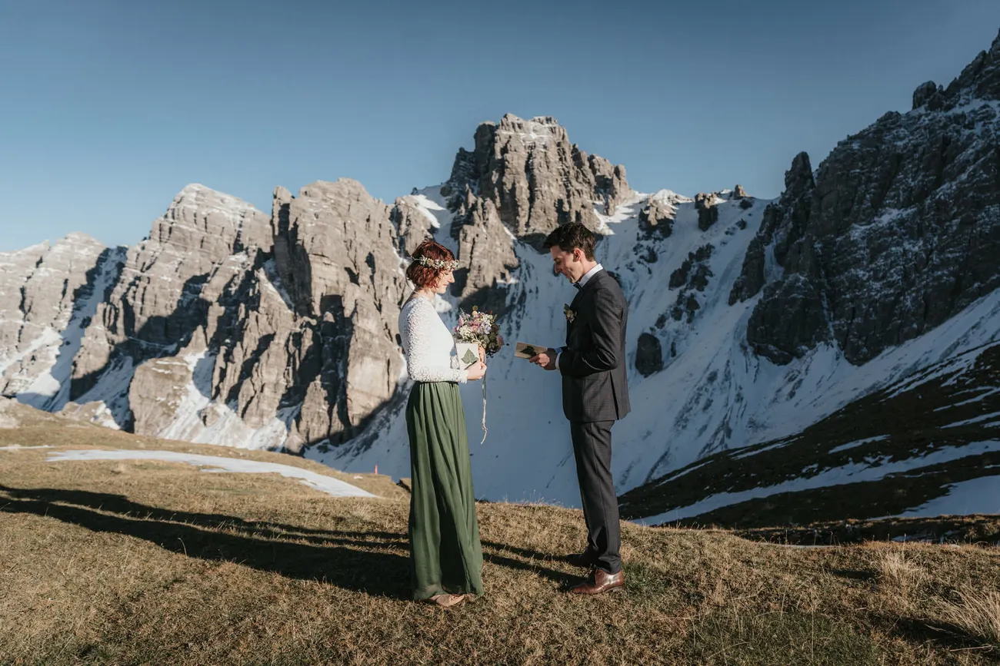
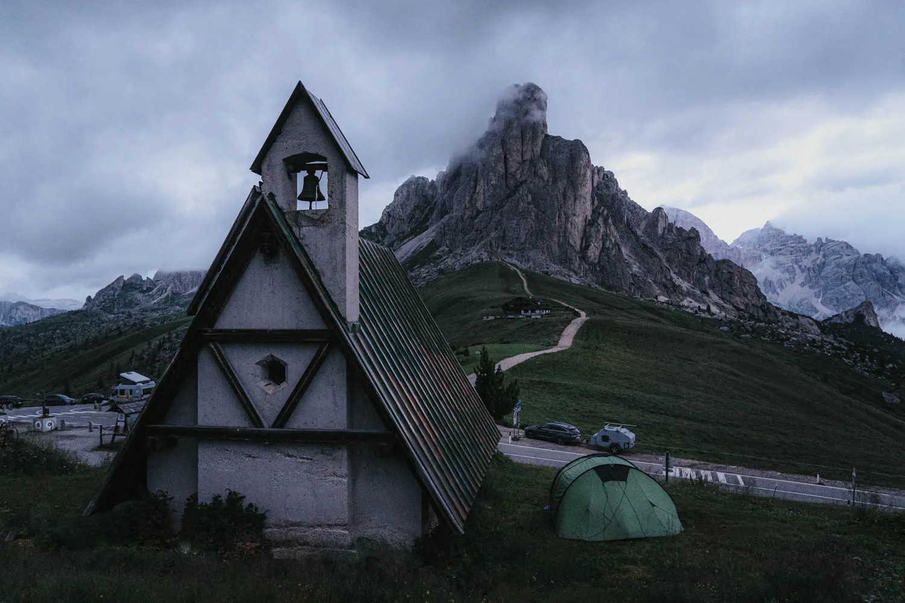
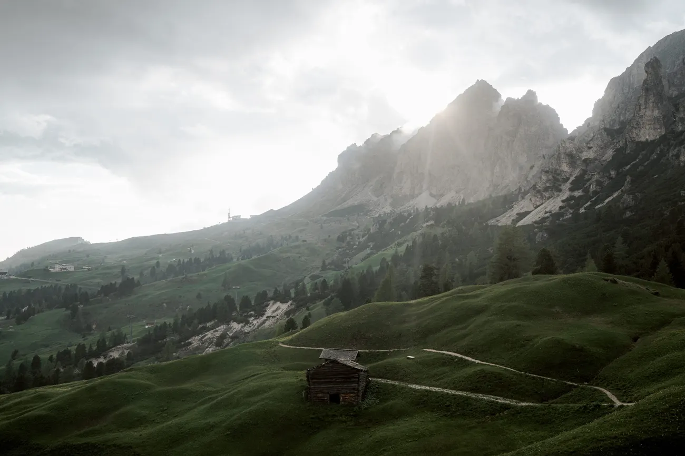

Le Alpi non sono un paesaggio ma una dozzina, e il luogo giusto per l'elopement è quello che si adatta alla giornata che avete in testa. Fotografiamo per tutto il massiccio — le pallide torri delle Dolomiti, i laghi smeraldo sotto la vetta più alta della Germania, i prati tranquilli e i laghi a specchio del Tirolo — e ogni angolo ha il suo carattere, la sua luce e le sue regole. Questa è la nostra onesta guida sul campo ai luoghi a cui torniamo di continuo, e come scegliere quello che è vostro.
Partite dalla sensazione, non dallo spillo. Volete il dramma da cartolina delle Dolomiti, la calma alpina di un lago tirolese o una vetta su cui stare al di sopra di tutto? La fatica, l'accesso, la stagione e — importante — dove potete sposarvi legalmente tirano tutti sulla scelta. Qui sotto percorriamo gli angoli delle Alpi che amiamo di più, ciò che ciascuno fa meglio e a chi si addice ognuno. Non dovete conoscere il luogo prima di conoscere l'atmosfera; questo è il nostro lavoro.

Poche domande oneste accorciano tutta la ricerca. Fin dove siete disposti a camminare? Dovete essere legalmente sposati nel giorno, o basta una cerimonia simbolica con le pratiche a casa? Caldo e verde, o freddo e bianco? Solo voi due, o qualche invitato che ha bisogno di un percorso facile? Le vostre risposte escludono metà mappa in pochi minuti — e ciò che resta è quasi sempre un luogo che non sapevate di chiedere.
Le Dolomiti sono dove la maggior parte delle coppie inizia a sognare, e a ragione: pallide torri di calcare che si tingono di rosa al tramonto, laghi turchesi, minuscole cappelle su passi verdi. È la scena più drammatica e riconoscibile delle Alpi — il Lago di Braies, le Tre Cime, la cresta della Seceda, il Passo Giau. Il rovescio è la fama: le icone si riempiono, quindi pianifichiamo attorno alla prima luce e a gemelli più tranquilli. Se le Dolomiti vi chiamano, abbiamo una guida a parte ai loro luoghi più belli — ma ecco la versione breve del perché ne valgono la pena.


Ciò che rende le Dolomiti diverse dalle altre montagne è il colore. Al tramonto il pallido calcare cattura l'ultima luce e brilla di un rosso brace per pochi minuti irripetibili — la gente del posto lo chiama enrosadira, e nessuna foto vi prepara del tutto a vederlo di persona. Aggiungete acqua del colore di una piscina e prati pieni di erioforo, e capite perché è qui che inizia il sogno. Noi ci assicuriamo solo che siate nel punto giusto quando la roccia prende fuoco.
Sul confine tra Germania e Austria si erge la Zugspitze, la vetta più alta della Germania, e stare sulle sue creste è come stare sul tetto del Paese — un mare di cime in ogni direzione. Una funivia vi porta quasi fino in cima, quindi il dramma arriva senza una salita di due giorni, e la roccia quassù è cruda e cinematografica, soprattutto nella luce spoglia del mattino. È una preferita per le coppie che vogliono la sensazione della vera quota con un percorso facile per raggiungerla.

C'è qualcosa di silenziosamente commovente nello sposarsi sulla cima di un intero Paese. La Zugspitze è a cavallo del confine, quindi in una mattina limpida guardate insieme sulla Germania e sull'Austria, cresta dopo cresta che svanisce nella foschia. Quassù è esposto e selvaggio, quindi lo calcoliamo per luce tranquilla e teniamo la cerimonia agile — ma la ricompensa è un senso di dimensione e altezza che una valle semplicemente non può dare, raggiunto in funivia invece che con la corda.
Quassù c'è anche un raro bonus: sulla cima della Zugspitze potete sposarvi davvero in modo ufficiale e con valore legale, tramite l'ufficio di stato civile di Garmisch-Partenkirchen. Il problema è la richiesta — i posti in vetta sono molto ambiti e vanno via in fretta, e le date si possono richiedere solo con circa sei mesi di anticipo, quindi questa ripaga una pianificazione precoce e decisa. Vi aiutiamo a calcolare la richiesta.
Ai piedi della Zugspitze si trova l'Eibsee, uno dei laghi più belli delle Alpi bavaresi — un sorprendente verde smeraldo, cinto da bosco scuro con la grande montagna che si alza proprio dietro. È sul ciglio della strada e facile, dolce per un abito e una piccola cerimonia, e una vera alternativa ai più affollati laghi dolomitici per le coppie che vogliono acqua e una vetta gigante senza la folla. La prima luce sull'acqua ferma è qui pura calma.

L'Eibsee è anche una base dolce per tutto il viaggio. È a pochi minuti da Garmisch-Partenkirchen, facile da raggiungere, e abbina una mattina al lago con un pomeriggio in vetta sulla stessa montagna — acqua e quota in un giorno, senza un lungo tragitto tra le due. Per le coppie che vogliono prima la calma di un lago di bosco e poi il dramma di una cresta alta, è una delle giornate più rotonde che le Alpi offrano.
Una nota onesta sul piano legale: una cerimonia libera e simbolica all'Eibsee è semplice e non richiede permessi speciali — ma non ha valore legale, quindi il matrimonio in sé si firma in comune, a casa o in anticipo. Se volete l'atto legale in montagna in Baviera, la via è la cima della Zugspitze qui sopra; altrimenti l'Eibsee è un luogo bellissimo per dire le vostre parole e tenere le pratiche semplici.
Il Tirolo è il nostro segreto tranquillo: laghi di montagna nascosti, ondulati prati verdi sotto cime striate di neve, e paesi a una comoda distanza da Innsbruck. Raramente ha la folla delle famose icone dolomitiche, e ha un grande vantaggio pratico — in Austria potete sposarvi legalmente, e in alcune regioni persino in un luogo all'aperto autorizzato. Per le coppie che vogliono l'atto legale in montagna invece di uno simbolico, il Tirolo è spesso la risposta, ed è altrettanto bello.



Il Tirolo premia anche la coppia che vuole un po' di cultura alpina attorno alla giornata. Paesi di legno con chiese dal campanile a cipolla, rifugi che servono lunghi pranzi, funivie che aprono gli alti pascoli — sembra vissuto e caldo più che remoto. La stessa Innsbruck, con il suo centro storico sotto la Nordkette, è una base bella e pratica, a un'ora o meno da laghi, prati e le creste sopra la città.
Gli alti passi che collegano le valli — Passo Giau, Passo Gardena, Passo Sella — sono il facile segreto del massiccio: guidate a oltre 2.000 metri e uscite dritti sul prato alpino con i giganti tutt'intorno, senza salita. Il Giau in particolare, con la sua piccola cappella a punta sotto la vetta a pinna di squalo della Ra Gusela, vi dà dramma e un tocco di fiaba senza camminata, e la luce della sera lì è tra le migliori ovunque. Perfetto per le coppie che vogliono la sensazione dell'alta montagna con la famiglia al seguito.



L'altro dono dei passi è la luce. Poiché stanno alti e aperti, con nulla tra voi e l'orizzonte, catturano alba e tramonto per intero — e il Giau in particolare si affaccia così bene alla sera che spesso lo pianifichiamo per l'ora dorata e l'enrosadira invece che per l'alba. Parcheggiate, camminate un minuto sul prato e lasciate che il cielo faccia il resto; potete essere di ritorno per una cena in valle entro un'ora.
Se volete che la giornata si senta guadagnata, le Alpi premiano la fatica come nessun altro luogo. Una cresta raggiunta a piedi o con una breve salita da un impianto vi dà esposizione, un orizzonte a 360 gradi e una dimensione che toglie il respiro — voi minuscoli contro mille metri di roccia. Sono le inquadrature più audaci che facciamo, e le più intime: cinque minuti oltre dove la maggior parte torna indietro, e la montagna è vostra. Adattiamo la camminata alla vostra forma e non esageriamo mai quanto costa raggiungere un luogo.

Niente di tutto ciò deve significare un'epopea alpinistica. Molte delle nostre inquadrature di cresta più drammatiche sono a soli pochi passi sicuri da una stazione della funivia — abbastanza da lasciarsi la folla alle spalle, non abbastanza da servire corde o una guida. Perlustriamo ogni percorso in anticipo, portiamo il piano e gli strati di scorta e lo dosiamo così che la camminata sembri parte dell'avventura invece di un peso. Se ce la fate con un'ora su un sentiero, vi mettiamo in un posto che sembra impossibile.
L'inverno rende l'intero massiccio monocromo e quasi ultraterreno — neve fino all'orizzonte, le cime ridotte al bianco e nero e, cosa migliore, una solitudine quasi totale. Le Tre Cime e le alte creste innevate sono indimenticabili in questa luce, e una cerimonia quassù è come stare dentro una palla di neve. Chiede di più — strati caldi, passo sicuro e un occhio attento a quali strade a pedaggio e impianti sono aperti, perché gli orari invernali sono ridotti. Quando si allinea, è la versione più spettacolare delle Alpi che fotografiamo in tutto l'anno.


L'inverno assottiglia anche il calendario a vostro favore. Le coppie che sfidano il freddo hanno i luoghi più famosi quasi interamente per sé, e il sole basso resta morbido e dorato per ore invece che per minuti. Vestitevi per questo — strati caldi sotto il cappotto, scarponi veri fino al posto, le scarpe belle in una borsa — e un cielo grigio con la neve non è un contrattempo ma un dono, che regala alcune delle foto di montagna più suggestive che facciamo.
Allora, come scegliere? Andate nelle Dolomiti per il massimo dramma e le icone nella loro versione più tranquilla. Andate in Tirolo o Baviera per laghi più calmi, meno fatica e la via legale facile. Scegliete un lago se volete quiete e riflesso, un passo se volete grandi montagne senza camminata, una vetta se volete guadagnarvi la vista, e l'inverno se preferite solitudine e dramma al calore. Quando una coppia davvero non riesce a decidere, lo dividiamo in un paio di giorni — un lago all'alba, un passo al tramonto. Diteci la sensazione e vi nomineremo il luogo.
E non siete legati a un'unica risposta. Alcuni dei nostri viaggi preferiti mescolano due mondi in pochi giorni — un tranquillo lago tirolese all'alba, una facile cerimonia legale, poi una guida a sud per un tramonto dolomitico la sera dopo. I massicci sono abbastanza vicini perché un solo viaggio possa contenere sia la calma sia il dramma. Diteci le due sensazioni tra cui non riuscite a scegliere, e spesso troveremo il modo di darvi entrambe.
Il massiccio è più facile da raggiungere di quanto suggerisca il dramma. La maggior parte delle coppie atterra a Venezia, Verona, Innsbruck o Monaco e guida verso l'interno — le Dolomiti sono a due o tre ore da Venezia, la Zugspitze e l'Eibsee stanno proprio sul confine bavarese vicino a Garmisch, e il Tirolo si estende attorno a Innsbruck. Attraversare tra Italia e Austria è una guida semplice, senza complicazioni. Da una sola base di valle potete spesso raggiungere diversi di questi luoghi, e costruiamo il percorso attorno alla luce — quale luogo all'alba, quale al tramonto — e gestiamo le prenotazioni, gli orari e la guida così le vostre mattine restano serene.
Dove vi basate plasma il viaggio tanto quanto dove fotografate. Cortina d’Ampezzo e l'Alta Badia vi mettono nel cuore delle Dolomiti; Garmisch sta proprio sotto la Zugspitze; Innsbruck apre il Tirolo in ogni direzione. Vi aiutiamo a scegliere la base che tiene i vostri luoghi a una comoda distanza all'alba, prenotiamo i rifugi dove un pernottamento rende possibile un'alba, e vi consegniamo un piano semplice così l'unica cosa a cui dovete pensare quel giorno siete l'un l'altra.
Ovunque atterriate nelle Alpi, la luce è la cosa — e la giornata non è finita quando cala il sole. L'alba vi dà icone vuote e colore morbido; l'ora dorata scalda la roccia e scivola nello spettacolo di fuoco dell'enrosadira sulle pareti dolomitiche; e l'ora blu, la finestra fresca e quieta dopo, è quella che la maggior parte perde smontando troppo presto. Noi mai. Poi la festa all'altezza — una cena in rifugio, un tuffo, un brindisi in montagna — perché i luoghi migliori meritano più di una sola inquadratura.

Entrambi sono straordinari; si sentono solo diversi. Le Dolomiti vi danno la scena più drammatica e iconica — torri pallide, laghi turchesi, le foto che tutti riconoscono. Il Tirolo e il confine bavarese vi danno laghi e prati più tranquilli, un'atmosfera più dolce e la via più facile a una cerimonia con valore legale. Vi aiutiamo ad abbinare il massiccio all'atmosfera e alle pratiche che volete.
In Austria sì — una cerimonia civile è possibile, e in alcune regioni tirolesi persino in un luogo all'aperto autorizzato, motivo per cui le coppie che vogliono l'atto legale in montagna scelgono spesso il Tirolo. In Italia il matrimonio legale avviene solo in comune, quindi una cerimonia dolomitica resta simbolica con le pratiche firmate a casa. Vi indichiamo il Paese e la via giusti per voi.
È una vera mescolanza, ed è il bello — c'è qualcosa per ogni livello. Il Lago di Braies, l'Eibsee, il Passo Giau e gli alti passi sono praticamente sul ciglio della strada; la Zugspitze e altre creste si raggiungono in funivia; una manciata dei laghi e delle vette più tranquille vuole una camminata. Diteci quanto vi piace muovervi e costruiamo la giornata su misura.
Avete l'imbarazzo della scelta. Il Lago di Braies è l'icona turchese; l'Eibsee sotto la Zugspitze è verde smeraldo e incorniciato dal bosco; e i più tranquilli laghi di montagna tirolesi vi danno la stessa acqua a specchio quasi senza nessuno intorno. Tutti sono migliori alla prima luce, prima che arrivi la giornata.
I luoghi alti e frastagliati sono indimenticabili sotto la neve — le Tre Cime e le creste innevate diventano monocrome e drammatiche, e potete averle tutte per voi. In cambio c'è l'accesso: alcune strade a pedaggio e funivie vanno ridotte o chiudono, e chiede strati caldi e passo sicuro. Pianifichiamo attorno a ciò che è davvero aperto e sicuro.
Meno di quanto pensiate, e di proposito. Inseguire cinque posti significa non vederne bene nessuno; di solito pianifichiamo un luogo principale per la luce migliore e forse un secondo più facile vicino. Nell'arco di qualche giorno per il massiccio possiamo mettere insieme un vero tour — un lago all'alba, un passo la sera, una vetta la mattina dopo.


Usiamo cookie per statistiche anonime (Google Analytics tramite Google Tag Manager) per migliorare il sito. L'analisi parte solo con il tuo consenso. Privacy